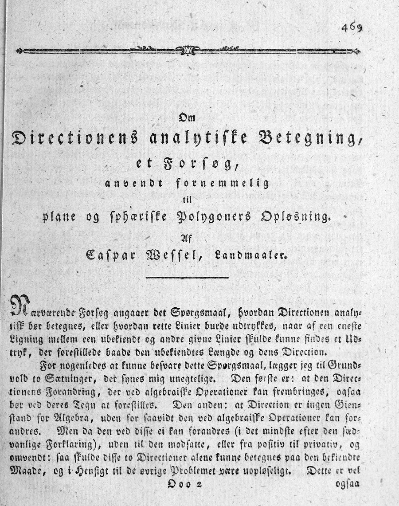
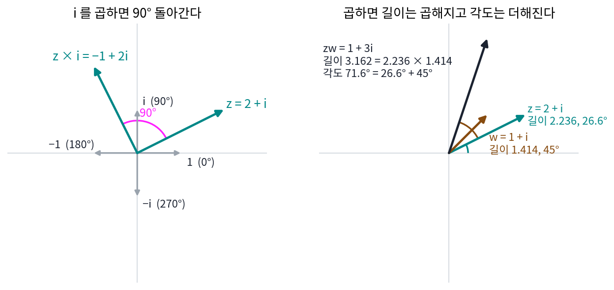
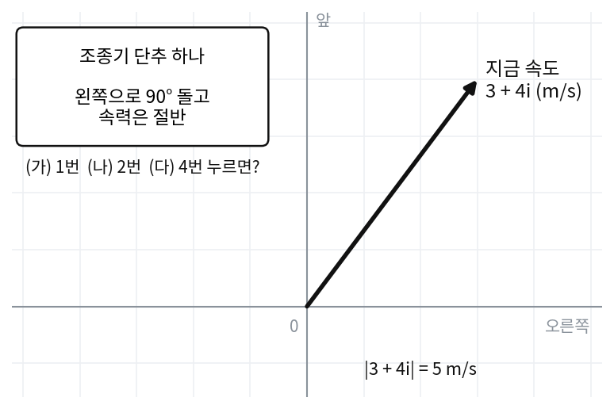
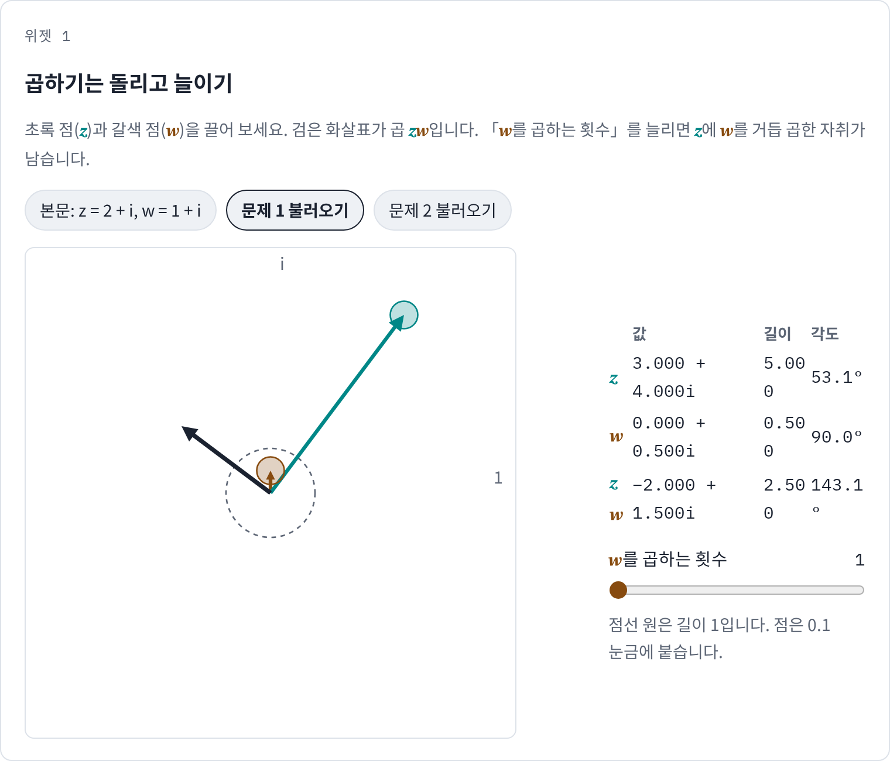
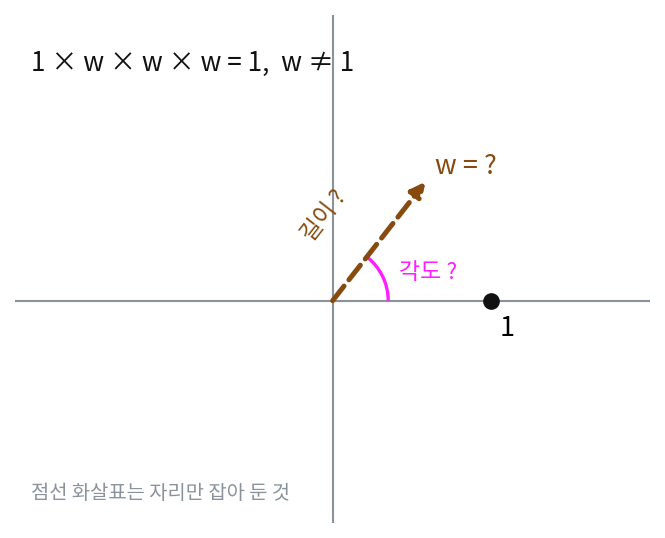
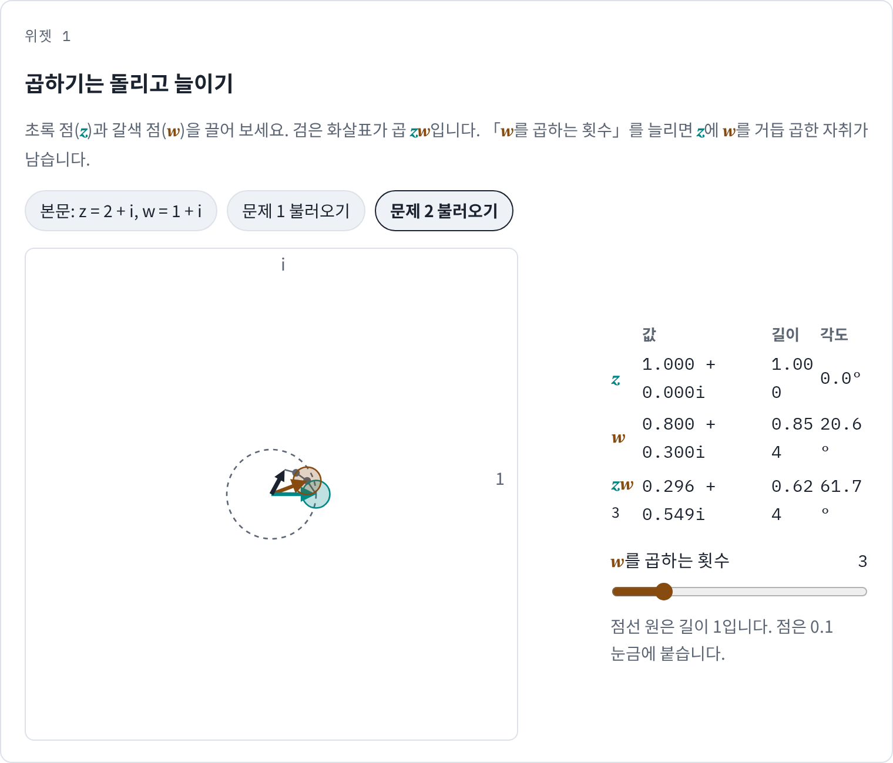
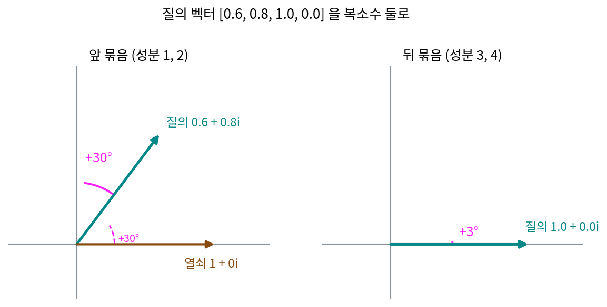

에피사이클: 돌아가는 화살표로 그림 그리기
이 장의 물음
소리의 세기나 하루 기온처럼 값 하나가 같은 모양으로 되풀이되면, 주파수가 정수배인 사인·코사인 물결을 더해 적을 수 있었다(푸리에 급수). 그런데 종이 위에서 「ㅅ」을 따라 움직이는 펜 끝은 가로 자리와 세로 자리, 두 값이 함께 바뀌고, 밤하늘에 그림을 그리는 드론 불빛은 세 값이 함께 바뀐다. 인터넷에는 크기가 다른 원 수십 개가 서로의 끝에 매달려 빙빙 돌면서 사람 얼굴이나 글자를 그려 내는 영상이 많다. 그 원들은 무엇이고, 원마다 크기와 도는 속도는 누가 정했을까?
ML에서도 같은 장면이 나온다. 요즘 언어 모델 다수는 어텐션의 질의 벡터와 열쇠 벡터의 성분을 둘씩 묶어, 토큰의 자리 번호만큼 평면에서 돌린 뒤에 내적을 계산한다. 묶음마다 자리 하나에 돌리는 각도가 다른데, 자리를 알려 주는 데 왜 하필 「돌리기」를 쓸까?
이 장은 다음 물음에 차례로 답한다.
- 평면에서 화살표를 돌리고 늘이는 일을 곱셈 한 번으로 할 수 있을까?
- 일정한 속도로 빙빙 도는 화살표는 어떤 식으로 적을까?
- 닫힌 곡선이면 무엇이든 도는 화살표 여러 개를 이어 붙여 그릴 수 있을까? 화살표마다의 길이와 처음 방향은 어떻게 구할까?
- 글자 하나를 알아볼 만큼 그리려면 화살표가 몇 개 필요할까? 무엇이 그 개수를 정할까?
- 펜이 평면을 벗어나 공간을 움직여도 같은 방법이 통할까?
복소수: 평면의 화살표, 곱하기는 돌리고 늘이기
펜 끝의 자리를 가로·세로 두 숫자 (2, 1)로 적고, 그 자리를 원점 둘레로 90° 돌려 보자. 두 숫자의 자리를 바꾸고 한쪽에 마이너스를 붙이면 답 (−1, 2)가 나온다. 하지만 30° 돌리려면 사정이 더 복잡해서, 새 가로 자리는 2 cos 30° − 1 sin 30°, 새 세로 자리는 2 sin 30° + 1 cos 30°라는 두 줄짜리 식을 매번 따로 계산해야 한다. 곡선 위를 움직이는 펜은 이 돌리기를 수천 번 되풀이한다.
수직선에는 이미 「돌리기」가 하나 있다. −1을 곱하면 3은 −3이 되어 원점 반대쪽으로 넘어가므로, 화살표로 보면 반 바퀴(180°) 돌린 것이다. 그렇다면 곱하면 반의반 바퀴(90°) 도는 수도 있을까? 그런 수를 두 번 곱하면 반 바퀴를 돈 것이니 −1을 곱한 것과 같아야 하는데, 제곱해서 −1이 되는 수는 수직선 위에는 없다.
역사: 측량사가 그린 화살표
제곱해서 음수가 되는 수는 화살표보다 250년 먼저 나타났다. 1545년 카르다노(Gerolamo Cardano)는 『위대한 술법』에서 「더해서 10, 곱해서 40이 되는 두 수」를 구하다 5 + √−15와 5 − √−15에 닿았다. 둘을 곱하면 25 − (−15) = 40이 맞게 나온다. 1572년 봄벨리(Rafael Bombelli)는 삼차방정식을 푸는 중간 단계에서 이런 수를 거쳐야 실수 답에 닿는 경우를 보이고 계산 규칙을 정리했다. 1637년 데카르트(René Descartes)는 이런 근에 「상상의(imaginaire)」라는 이름을 붙였다. 「허수」라는 말이 여기서 왔다.
계산은 맞는데 무엇을 가리키는지 모르는 수였다. 월리스(John Wallis)는 1685년 『대수학』에서 음수를 「뒤로 물러선 걸음」으로 풀어 보인 데 이어, 허수도 원에 그은 선분의 길이로 그려 보려 했다. 17년 뒤인 1702년에도 라이프니츠(Gottfried Leibniz)는 허수를 「있음과 없음 사이의 양서류」라고 불렀다.
화살표 그림을 끝까지 밀고 간 사람은 수학자가 아니라 측량사였다. 노르웨이에서 태어나 덴마크 땅을 삼각측량으로 재며 지도를 그리던 베셀(Caspar Wessel)은, 측량의 계산을 하다가 길이와 방향을 함께 담는 수가 있어야 한다고 느꼈다. 그의 논문 제목도 「방향의 해석적 표현에 관한 시론: 주로 평면 다각형과 구면 다각형의 풀이에 적용하여」다. 그는 수 하나를 「어느 방향으로 얼마만큼」을 함께 담은 선분으로 보고, 곱하기의 규칙을 「곱의 방향각은 두 수의 방향각의 합」으로 정했다. 이 규칙대로라면 90° 방향의 단위 선분을 두 번 곱하면 180° 방향의 단위 선분인 −1이 된다. 제곱해서 −1이 되는 수가 수직선 밖의 방향 하나로 자리를 찾은 것이다. 이 논문은 1797년 덴마크 왕립 학술원에서 읽히고 1799년 덴마크어로 나왔지만 거의 읽히지 않았다. 1806년 파리의 아르강(Jean-Robert Argand)이 따로 같은 그림에 닿았고, 1831년 가우스(Carl Friedrich Gauss)가 다시 내놓으며 널리 퍼졌다. 베셀의 논문은 1897년 프랑스어로 옮겨지고서야 알려졌다.



지금 보면 당연한 그림인데요. 가로축에 실수, 세로축에 허수를 놓고 점을 찍으면 되잖아요. 그 그림 하나가 250년이나 걸렸어요?

그 그림을 그리려면 수 하나에 「얼마만큼」 말고 「어느 방향으로」가 붙어야 해요. 월리스가 음수를 그린 것도 수직선 위에서 뒤로 물러선 것이었고, 허수는 원에 그은 선분의 길이로 그리려 했어요. 둘 다 수를 길이 하나로 본 거예요.

그럼 봄벨리는 무엇을 가리키는지도 모르는 수를 거쳐서 실수 답을 얻은 거네요. 중간 단계를 어떻게 믿었을까요?

끝에 나온 실수 답은 방정식에 넣어 보면 맞았으니까요. 규칙대로 계산하면 맞는 답에 닿는다는 것 말고는 기댈 데가 없었어요.

베셀은 수학자도 아닌데 어떻게 수에 방향을 붙일 생각을 했어요?
삼각측량은 아는 점에서 「어느 방향으로 얼마나」를 재어 다음 점을 정하는 일이에요. 다각형을 풀 때마다 길이와 방향을 따로 계산해야 했으니, 둘을 함께 담는 수가 아쉬웠던 거죠. 그런데 그 논문은 덴마크어로 나와 100년 가까이 묻혀 있었어요.

곱의 방향각이 두 방향각의 합이라면, 90° 방향의 화살표를 곱하는 건 어떤 화살표든 90° 돌리는 일이 되겠네요. 그럼 처음에 (2, 1)을 돌리던 두 줄짜리 식도 곱셈 한 번으로 나올까요?
화살표 2 + i 에 i 를 곱하면
베셀의 규칙대로 90° 방향의 길이 1인 화살표를 i라 부르면 i × i = −1이다. 평면의 점 (x, y)는 「오른쪽으로 x, 위로 y」이므로 x + iy로 적고, 펜 끝 (2, 1)은 2 + i가 된다. 여기에 i를 곱하고, 보통의 곱셈처럼 괄호를 푼 뒤 i²을 −1로 바꾼다.
(2 + i) × i = 2i + i² = −1 + 2i
나온 (−1, 2)는 처음에 자리를 바꾸고 마이너스를 붙여 얻은 90° 돌린 자리와 같다. i를 한 번 더 곱하면 −2 − i로 반 바퀴, 네 번 곱하면 2 + i로 제자리다.
이번에는 i 대신 1 + i를 곱해 보자. 1 + i는 길이 √2 = 1.414, 각도 45°인 화살표다. (2 + i)(1 + i) = 2 + 2i + i + i² = 1 + 3i. 처음 화살표 2 + i는 길이 √5 = 2.236, 각도 26.6°였고, 곱한 결과 1 + 3i는 길이 3.162, 각도 71.6°다. 3.162 = 2.236 × 1.414이고 71.6° = 26.6° + 45°다. 길이는 곱해지고 각도는 더해졌으니, 괄호를 풀어 계산했을 뿐인데 베셀이 정한 규칙이 그대로 나온다.
이렇게 평면의 점 하나를 x + iy 꼴의 수 하나로 적은 것을 복소수 (평면의 화살표 / complex number)라 하고, x를 실수 부분, y를 허수 부분이라 부른다. 두 복소수의 곱셈은 아래 규칙 하나로 요약된다.
각도에 그리스 글자 φ(phi, 파이)를 쓰는 것은 이 책의 약속이다. 흔히 쓰는 θ(세타)와 글자만 다르고 뜻은 같으며, θ는 신경망의 파라미터에 남겨 둔다.
그러니 길이 1인 복소수를 곱하는 일은 순수한 돌리기다. 30° 돌리고 싶으면 길이 1, 각도 30°인 수 cos 30° + i sin 30° = 0.866 + 0.5i를 곱하면 된다. 처음에 두 줄로 따로 쓰던 식이 곱셈 한 번 안에 들어 있다.
ML에서: 성분 둘을 복소수 하나로 묶는 코드
벡터의 성분 둘을 짝지어 평면에서 돌리는 일은 신경망 코드에도 있다. 메타가 공개한 LLaMA 참조 구현(llama/model.py 의 apply_rotary_emb)은 질의와 열쇠 벡터를 성분 둘씩 묶어 torch.view_as_complex 로 복소수로 바꾸고, torch.polar 로 만든 길이 1인 복소수를 곱한 뒤 다시 실수 성분으로 푼다. 2 × 2 회전 행렬을 곱하는 것과 결과가 같고, 코드에는 곱셈 기호 하나만 남는다. 돌리는 각도를 어떻게 정하는지는 일정한 속도로 도는 화살표를 식으로 적은 뒤에 본다.
문제 1. 드론 조종기의 명령
드론이 지금 오른쪽으로 3 m/s, 앞으로 4 m/s 로 날고 있으니 복소수로 3 + 4i 다. 조종기의 단추 하나는 「왼쪽으로 90° 돌고 속력은 절반」이다. (가) 단추를 한 번 누른 뒤의 속도를 복소수로 적어라. (나) 단추를 두 번 연달아 누르면 드론은 처음과 비교해 어느 쪽으로 얼마나 빠르게 나는가? (다) 네 번 누르면? (위젯 1의 「문제 1 불러오기」로 확인해 보자.)

(가)는 90° 돌리는 공식에 넣으면 돼요. 가로 새 값은 3 cos 90° − 4 sin 90° = −4, 세로는 3 sin 90° + 4 cos 90° = 3이니까 (−4, 3)이고, 속력 절반이라 (−2, 1.5)요.
맞아요. 같은 것을 곱셈 하나로 적으면 무엇을 곱하는 거죠?
길이 0.5, 각도 90°인 화살표니까 0.5i요. (3 + 4i) × 0.5i = 1.5i + 2i² = −2 + 1.5i. 같네요.
(나)는 한 번 더 돌리니까 −2 + 1.5i에서 다시 공식을 쓰면… −0.75 − i요. 왼쪽 아래로 가네요.

0.5i를 두 번 곱한 것은 (0.5i)²을 한 번 곱한 것과 같아요. (0.5i)²은 얼마죠?

0.25 × i² = −0.25예요. 어, 음수만 남았네요. −1을 곱하는 건 반 바퀴니까 처음과 정반대로 나는 거예요.
속력은?
5 m/s의 4분의 1인 1.25 m/s. −0.25 × (3 + 4i) = −0.75 − i로 네 답이랑 같아.
(다)도 같은 방법으로 해 볼래요?

(0.5i)⁴ = 0.0625라서 방향은 처음과 같고 속력만 16분의 1이에요. 공식을 네 번 돌릴 필요 없이 0.0625를 한 번 곱하면 되네요.

단추를 여러 번 누르는 것도 수 하나를 곱하는 걸로 끝나네. 각도는 더해지고 길이는 곱해지고.

문제 2. 세 번 곱하면 제자리로 오는 수
1이 아닌 복소수 w 를 1에 세 번 곱했더니 다시 1이 되었다. (가) w 의 길이는 얼마여야 하는가? (나) w 의 각도로 가능한 값을 모두 구하고, w 를 x + iy 꼴로 적어라. (다) 네 번 곱해 제자리로 오는 수를 같은 방법으로 찾으면 몇 개가 나오는가? (위젯 1의 「문제 2 불러오기」는 w 를 세 번 곱한 자취를 보여 준다. 갈색 점을 끌어 자취의 끝이 1에 닿게 해 보자.)

각도만 맞추면 되잖아요. 세 번에 한 바퀴니까 120°요. 길이는 아무거나요.
길이가 1.1이고 각도가 120°인 수를 세 번 곱하면 길이가 얼마가 되죠?
길이는 곱해지니까 1.1³ = 1.331이요. 1이 아니네요. 길이도 꼭 1이어야 해요.
각도도 120° 하나뿐일까? 세 번 더한 각도가 360°의 정수배이기만 하면 되잖아. 그럼 240°도 돼. 세 번이면 720°거든.
그럼 360°는요?
360°면 다시 0°랑 같아서 w = 1이 돼요. 문제에서 1이 아니라고 했으니까 빼야죠. 그래서 120°와 240° 둘이에요. cos 120° + i sin 120° = −0.5 + 0.866i, 240°는 −0.5 − 0.866i예요.
확인해 봐요. (−0.5 + 0.866i)²은요?

−0.5 − 0.866i예요. 240°짜리가 나오고, 한 번 더 곱하면 1이에요. 1, −0.5 + 0.866i, −0.5 − 0.866i가 길이 1인 원을 셋으로 똑같이 나눈 꼭짓점이네요.

그럼 (다)는 네 번에 한 바퀴니까 90°씩?
응, 0°까지 넣으면 네 개, 1, i, −1, −i야.

정다각형 꼭짓점을 원에 그릴 때 각도기로 360°를 나누던 게 이 계산이었어. 수업에서 「1의 n제곱근」이라고 이름만 들었는데.

문제 3. 성분 넷을 복소수 둘로
질의 벡터의 성분이 [0.6, 0.8, 1.0, 0.0] 이다. 앞의 두 성분과 뒤의 두 성분을 각각 복소수 하나로 묶어, 앞 묶음은 30°, 뒤 묶음은 3° 돌린다. (가) 앞 묶음 0.6 + 0.8i 를 회전 행렬로 돌린 값과 cos 30° + i sin 30° 를 곱한 값을 비교하라. (나) 돌린 뒤의 성분 넷을 적고, 묶음마다 길이가 어떻게 되었는지 말하라. (다) 열쇠 벡터의 앞 묶음 1 + 0i 도 같은 30° 를 돌렸다면, 앞 묶음끼리의 내적은 돌리기 전과 후에 같은가?

(가)는 회전 행렬로 하면 (0.866 × 0.6 − 0.5 × 0.8, 0.5 × 0.6 + 0.866 × 0.8) = (0.120, 0.993)이고, cos 30° + i sin 30°를 곱해도 0.120 + 0.993i예요.
(나)는 뒤 묶음 1.0 + 0i에 3°짜리를 곱하면 0.999 + 0.052i니까 [0.120, 0.993, 0.999, 0.052]예요.
길이는요?
길이 1인 수를 곱했으니 길이는 바뀌지 않아요. 앞 묶음 √(0.6² + 0.8²) = 1이 돌린 뒤에도 1이고, 뒤 묶음도 1이에요.
(다)는요? 열쇠의 앞 묶음 1 + 0i도 30° 돌렸어요.

돌리기 전 내적은 0.6 × 1 + 0.8 × 0 = 0.6이고, 돌린 뒤는 열쇠가 (0.866, 0.5)라 0.120 × 0.866 + 0.993 × 0.5 = 0.600이에요. 같아요.
둘 다 30°씩 움직였으니까 사이 각도가 그대로라서 그렇구나.

그래요. 같은 각도만큼 돌리면 둘 사이의 각은 그대로라서 내적이 변하지 않아요. 그런데 질의와 열쇠를 서로 다른 각도로 돌리면 어떨까요? 그 각도를 토큰의 자리 번호로 정한다면, 내적에는 무엇이 남을지 생각해 두세요.